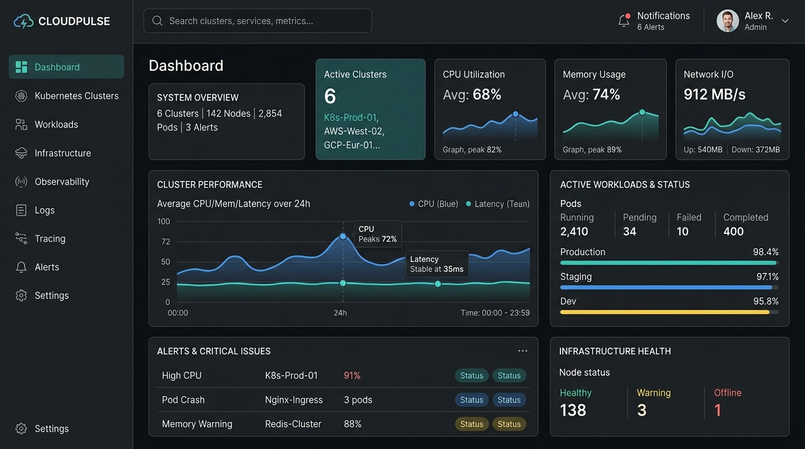

EduByte Code Sandbox & Autograder
A lightweight browser-based programming environment and automated assignment evaluator created for student programmers. Provides instant syntax error diagnostics, interactive test-runner output, and real-time teacher telemetry.
- ▸ 1,200+ student lab submissions evaluated with zero server latency
- ▸ Sandboxed WebAssembly runtime executing Python and JavaScript on low-spec school PCs
- ▸ Teacher live dashboard showing class-wide comprehension heatmaps